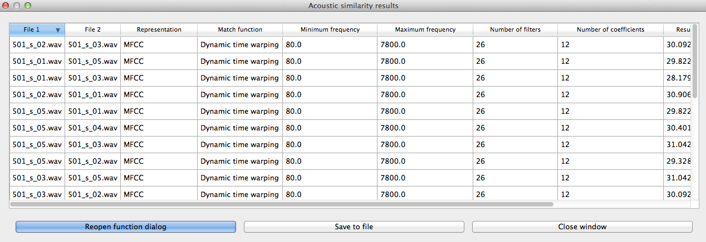

Acoustic Similarity¶
About the function¶
Acoustic similarity analyses quantify the degree to which waveforms of linguistic objects (such as sounds or words) are similar to each other. The acoustic similarity measures provided here have primarily been used in the study of phonetic convergence between interacting speakers; convergence is measured as a function of increasing similarity. These measures are also commonly used in automatic speech and voice recognition systems, where incoming speech is compared to stored representations. Phonologically, acoustic similarity also has a number of applications. For example, it has been claimed that sounds that are acoustically distant from each other cannot be allophonically related, even if they are in complementary distribution (e.g. [Pike1947]; [Janda1999]).
Acoustic similarity alogorithms work on an aggregate scale, quantifying, on average, how similar one group of waveforms is to another. Representations have traditionally been in terms of mel-frequency cepstrum coefficents (MFCCs; [Delvaux2007]; [Mielke2012]), which is used widely for automatic speech recognition, but one recent introduction is multiple band amplitude envelopes [Lewandowski2012]. Both MFCCs and amplitude envelopes will be described in more detail in the following sections, and both are available as part of PCT.
The second dimension to consider is the algorithm used to match representations. The most common one is dynamic time warping (DTW), which uses dynamic programming to calculate the optimal path through a distance matrix [Sakoe1971], and gives the best alignment of two time series. Because one frame in one series can align to multiple frames in another series without a significant cost, DTW provides a distance independent of time. The other algorithm that is used is cross-correlation (see discussion in [Lewandowski2012], which aligns two time series at variable lags. Taking the max value of the alignment gives a similarity value for the two time series, with higher values corresponding to higher similarity.
Method of calculation¶
Preprocessing¶
Prior to conversion to MFCCs or amplitude envelopes, the waveform is pre-emphasized to give a flatter spectrum and correct for the higher drop off in amplitude of higher frequencies due to distance from the mouth.
MFCCs¶
The calculation of MFCCs in PCT’s function follows the Rastamat [Ellis2005]‘s implementation of HTK-style MFCCs [HTK] in [Matlab]. Generating MFCCs involves windowing the acoustic waveform and transforming the windowed signal to the linear frequency domain through a Fourier transform. Following that, a filterbank of triangular filters is constructed in the mel domain, which gives greater resolution to lower frequencies than higher frequencies. Once the filterbank is applied to the spectrum from the Fourier transform, the spectrum is represented as the log of the power in each of the mel filters. Using this mel spectrum, the mel frequency cepstrum is computed by performing a discrete cosine transform. This transform returns orthogonal coefficients describing the shape of the spectrum, with the first coefficent as the average value, the second as the slope of the spectrum, the third as the curvature, and so on, with each coefficient representing higher order deviations. The first coefficent is discarded, and the next X coefficents are taken, where X is the number of coefficents specified when calling the function. The number of coefficents must be one less than the number of filters, as the number of coefficents returned by the discrete cosine transform is equal to the number of filters in the mel filterbank.
Amplitude envelopes¶
The calculation of amplitude envelopes follows the Matlab implementation found in [Lewandowski2012]. First, the signal is filtered into X number of logarithmically spaced bands, where X is specified in the function call, using 4th order Butterworth filters. For each band, the amplitude envelope is calculated by converting the signal to its analytic signal through a Hilbert transform. Each envelope is downsampled to 120 Hz.
Dynamic time warping (DTW)¶
PCT implements a standard DTW algorithm [SakoeChiba, 1971]_ and gives similar results as the dtw package [Giorgino2009)]_ in [R]. Given two representations, a 2D matrix is constructed where the dimensions are equal to the number of frames in each representation. The initial values for each cell of the matrix is the Euclidean distance between the two feature vectors of those frames. The cells are updated so that they equal the local distance plus the minimum distance of the possible previous cells. At the end, the final cell contains the summed distance of the best path through the matrix, and this is the minimum distance between two representations.
Cross-correlation¶
Cross-correlation seeks to align two time series based on corresponding peaks and valleys. From each representation a time series is extracted for each frame’s feature and this time series is cross-correlated with the respective time series in the other representation. For instance, the time series for an amplitude envelope’s representation corresponds to each frequency band, and each frequency band of the first representation is cross-correlated with each respective frequency band of the second representation. The time series are normalized so that they sum to 1, and so matching signals receive a cross-correlation value of 1 and completely opposite signals receive a cross-correlation value of 0. The overall distance between two representations is the inverse of the average cross-correlation values for each band.
Similarity across directories¶
The algorithm for assessing the similarity of two directories (corresponding to segments) averages the similarity of each .wav file in the first directory to each .wav file in the second directory.
Implementing the acoustic similarity function in the GUI¶
To start the analysis, click on the “Calculate acoustic similarity...” in the Analysis menu and provide the following parameters. Note that unlike the other functions, acoustic similarity is not tied directly to any corpus that is loaded into PCT; sound files are accessed directly through directories on your computer.
- Comparison type: There are three kinds of comparisons that can be done
in PCT: single-directory, two-directory, or pairwise.
- Single directory: If a single directory is selected (using the “Choose directory...” dialogue box), two types of results will be returned: (1) each of the pairwise comparisons and (2) an average of all these comparisons (i.e., a single value).
- Two directories: Choose two directories, each corresponding to a set of sounds to be compared. For example, if one were interested in the similarity of [s] and [ʃ] in Hungarian, one directory would contain .wav files of individual [s] tokens, and the other directory would contain .wav files of individual [ʃ] tokens. Every sound file in the first directory will be compared to every sound file in the second directory, and the acoustic similarity measures that are returned will again be (1) all the pairwise comparisons and (2) an average of all these comparisons (i.e., a single value).
- Pairwise: One can also use a tab-delimied.txt file that lists all of the pairwise comparisons of individual sound files by listing their full path names. As with a single directory, each pairwise comparison will be returned separately.
- Representation: Select whether the sound files should be represented as MFCCs or amplitude envelopes (described in more detail above).
- Distance algorithm: Select whether comparison of sound files should be done using dynamic time warping or cross-correlation (described in more detail above).
- Frequency limits: Select a minimum frequency and a maximum frequency to use when generating representations. The human voice typically doesn’t go below 80 Hz, so that is the default cut off to avoid low-frequency noise. The maximum frequency has a hard bound of the Nyquist frequency of the sound files, that is, half their sampling rate. The lowest sampling rate that is typically used for speech is 16,000 Hz, so a cutoff near the Nyquist (8,000 Hz) is used as the default. The range of human hearing is 20 Hz to 20 kHz, but most energy in speech tends to fall off after 10 kHz.
- Frequency resolution: Select the number of filters to be used to divide up the frequency range specified above. The default for MFCCs is for 26 filters to be constructed, and for amplitude envelopes, 8 filters.
- Number of coefficients (MFCC only): Select the number of coefficients to be used in MFCC representations. The default is 12 coefficients, as that is standard in the field. If the number of coefficients is more than the number of filters minus one, the number of coefficients will be set to the number of filters minus one.
- Output: Select whether to return results as similarity (inverse distance) or to us ethe default, distance (inverse similarity). Dynamic time warping natively returns a distance measure which gets inverted to similarity and cross-correlation natively returns a similarity value which gets inverted to distance.
- Multiprocessing: As the generation and comparison of representations can be time-intensive, using multiprocessing on parts that can be run in parallel can speed the process up overall. In order to make this option available, the python-acoustic-similarity module must be installed; multiprocessing itself can be enabled by going to “Options” / “Preferences” / “Processing” (see also §3.9.1).
Here’s an example of the parameter-selection box:

- Calculating and saving results: The first time an analysis is run, the option to “Calculate acoustic similarity (start new results table)” should be selected. This will output the results to a pop-up window that lists the directories, the representation choice, the matching function, the minimum and maximum frequencies, the number of filters, the number of coefficients, the raw result, and whether the result is similarity (1) or distance (0). Subsequent analyses can either be added to the current table (as long as it hasn’t been closed between analyses) or put into a new table. Once a table has been created, click on “Save to file” at the bottom of the table window in order to open a system dialogue box and choose a directory; the table will be saved as a tab-delimited .txt file.
Here’s an example of the results file:
{kind=link}
To return to the function dialogue box with your most recently used selections, click on “Reopen function dialog.” Otherwise, the results table can be closed and you will be returned to your corpus view.